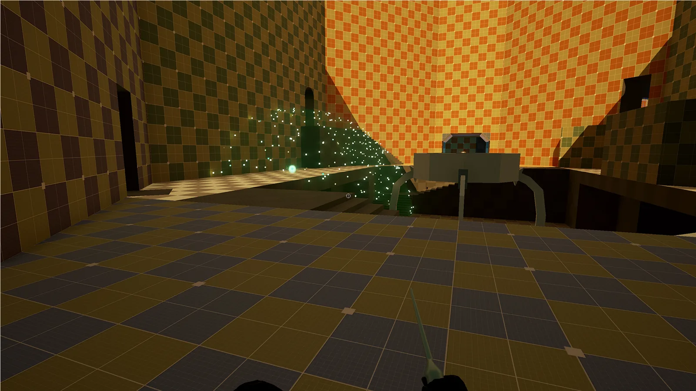
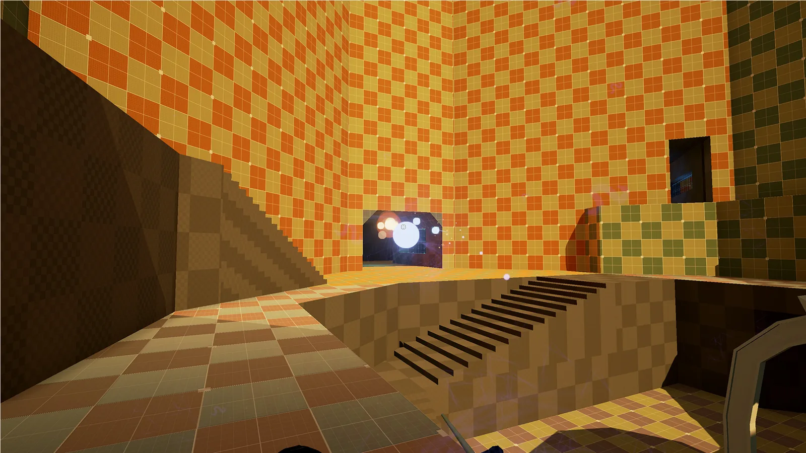
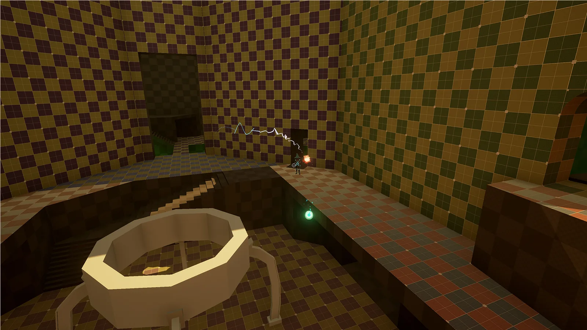
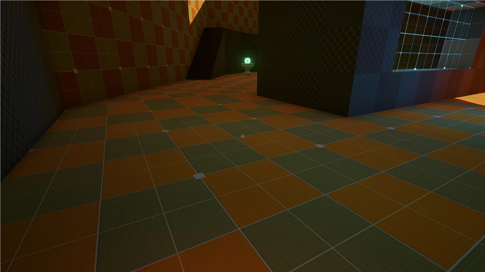

On Site
- Year
- 2016
- Platform
- PC
- Engine
- Unreal Engine




A level for my multiplayer game, Fight The Light, which constantly switches between asymmetrical and symmetrical play.
My role
I had to design a level that works for both kinds of play, with varying abilities. On Site is the symmetrical map.
What I did
- Designed a symmetrical map where every route leads to and from the centre area that holds the core
- Added an outer ring so gameplay keeps its flow and a player never needs to turn around to reach the other side